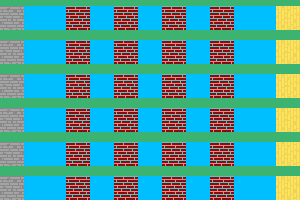
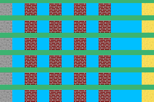
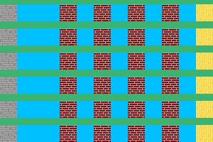
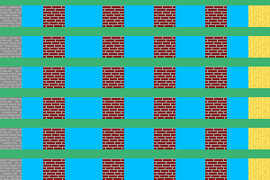

Floor¶
This element is used as part of wall.
Floor Description¶
Green - Texture (background) from wall
Blue - Texture (background) from floor
Grey - Left floor object
Yellow - Right floor object
Darkred - middle floor object
Properties¶
-
property
texture:TEXTURE-SELECTOR; Default nullLink to texture as background.
-
property
height:INTEGER; Default 0Height of floor. If it isn’t set, then try to borrow from background’s height.
-
property
padding:INTEGER; Default 0Padding between middle floor objects.
-
property
left-padding:INTEGER; Default padding valuePadding between left and middle floor objects.
-
property
right-padding:INTEGER; Default padding valuePadding between right and middle floor objects.
-
property
align:left | middle | right | justify; Default leftAlign of floor objects.
align: left¶
align: right¶

align: middle¶
align: justify¶
-
property
middle:TEXTURE-SELECTOR; Default nullLink to texture selector.
-
property
top:TEXTURE-SELECTOR; Default nullLink to texture selector and render only on left of floor. It ignores paddings and align.
-
property
bottom:TEXTURE-SELECTOR; Default nullLinks with texture selector and render only on right of right. It ignores paddings and align.